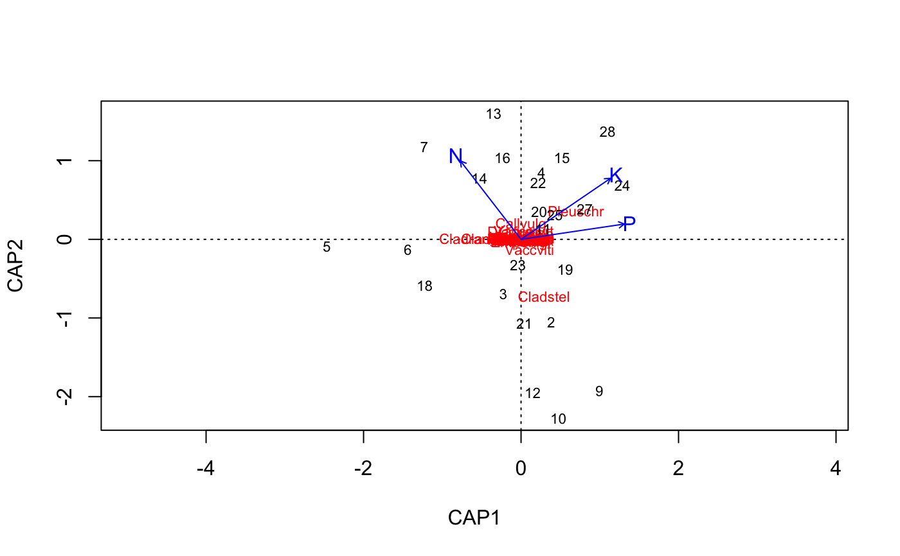

[Partial] Distance-based Redundancy Analysis
capscale.RdDistance-based redundancy analysis (dbRDA) is an ordination method
similar to Redundancy Analysis (rda), but it allows
non-Euclidean dissimilarity indices, such as Manhattan or
Bray--Curtis distance. Despite this non-Euclidean feature, the analysis
is strictly linear and metric. If called with Euclidean distance,
the results are identical to rda, but dbRDA
will be less efficient. Functions capscale and dbrda are
constrained versions of metric scaling, a.k.a. principal coordinates
analysis, which are based on the Euclidean distance but can be used,
and are more useful, with other dissimilarity measures. The functions
can also perform unconstrained principal coordinates analysis,
optionally using extended dissimilarities.
Usage
capscale(formula, data, distance = "euclidean", sqrt.dist = FALSE,
comm = NULL, add = FALSE, dfun = vegdist, metaMDSdist = FALSE,
na.action = na.fail, subset = NULL, ...)
dbrda(formula, data, distance = "euclidean", sqrt.dist = FALSE,
add = FALSE, dfun = vegdist, metaMDSdist = FALSE,
na.action = na.fail, subset = NULL, ...)Arguments
- formula
Model formula. The function can be called only with the formula interface. Most usual features of
formulahold, especially as defined inccaandrda. The LHS must be either a community data matrix or a dissimilarity matrix, e.g., fromvegdistordist. If the LHS is a data matrix, functionvegdistor function given indfunwill be used to find the dissimilarities. The RHS defines the constraints. The constraints can be continuous variables or factors, they can be transformed within the formula, and they can have interactions as in a typicalformula. The RHS can have a special termConditionthat defines variables to be “partialled out” before constraints, just like inrdaorcca. This allows the use of partial dbRDA.- data
Data frame containing the variables on the right hand side of the model formula.
- distance
The name of the dissimilarity (or distance) index if the LHS of the
formulais a data frame instead of dissimilarity matrix.- sqrt.dist
Take square roots of dissimilarities. See section
Detailsbelow.- comm
Community data frame which will be used for finding species scores when the LHS of the
formulawas a dissimilarity matrix. This is not used if the LHS is a data frame. If this is not supplied, the “species scores” are unavailable when dissimilarities were supplied. N.B., this is only available incapscale:dbrdadoes not return species scores. Functionsppscorescan be used to add species scores if they are missing.- add
Add a constant to the non-diagonal dissimilarities such that all eigenvalues are non-negative in the underlying Principal Co-ordinates Analysis (see
wcmdscalefor details)."lingoes"(orTRUE) uses the recommended method of Legendre & Anderson (1999: “method 1”) and"cailliez"uses their “method 2”. The latter is the only one incmdscale.- dfun
Distance or dissimilarity function used. Any function returning standard
"dist"and taking the index name as the first argument can be used.- metaMDSdist
Use
metaMDSdistsimilarly as inmetaMDS. This means automatic data transformation and using extended flexible shortest path dissimilarities (functionstepacross) when there are many dissimilarities based on no shared species.- na.action
Handling of missing values in constraints or conditions. The default (
na.fail) is to stop with missing values. Choicesna.omitandna.excludedelete rows with missing values, but differ in representation of results. Withna.omitonly non-missing site scores are shown, butna.excludegivesNAfor scores of missing observations. Unlike inrda, no WA scores are available for missing constraints or conditions.- subset
Subset of data rows. This can be a logical vector which is
TRUEfor kept observations, or a logical expression which can contain variables in the working environment,dataor species names of the community data (if given in the formula or ascommargument).- ...
Other parameters passed to underlying functions (e.g.,
metaMDSdist).
Details
Functions capscale and dbrda provide two alternative
implementations of dbRDA. Function capscale is based on
Legendre & Anderson (1999): the dissimilarity data are first
ordinated using metric scaling, and the ordination results are
analysed as rda. Function dbrda is based on
McArdle & Anderson (2001) and directly decomposes
dissimilarities. It does not use rda but a parallel
implementation adapted for analysing dissimilarities and returns a
subset of rda items. With Euclidean distances both
results are identical to rda. Other dissimilarities
may give negative eigenvalues associated with imaginary
axes. Negative eigenvalues are handled differently: capscale
ignores imaginary axes and analyses only real axes with positive
eigenvalues, and dbrda directly analyses dissimilarities and
can give negative eigenvalues in any component.
If the user supplied a community data frame instead of
dissimilarities, the functions will find dissimilarities using
vegdist or distance function given in dfun with
specified distance. The functions will accept distance
objects from vegdist, dist, or any other
method producing compatible objects. The constraining variables can be
continuous or factors or both, they can have interaction terms, or
they can be transformed in the call. Moreover, there can be a
special term Condition just like in rda and
cca so that “partial” analysis can be performed.
Function dbrda does not return species scores, and they can
also be missing in capscale, but they can be added after the
analysis using function sppscores.
Non-Euclidean dissimilarities can produce negative eigenvalues
(Legendre & Anderson 1999, McArdle & Anderson 2001). If there are
negative eigenvalues, the printed output of capscale will add
a column with sums of positive eigenvalues and an item of sum of
negative eigenvalues, and dbrda will add a column giving the
number of real dimensions with positive eigenvalues. If negative
eigenvalues are disturbing, functions let you to distort the
dissimilarities so that only non-negative eigenvalues will be
produced with argument add = TRUE. Alternatively, with
sqrt.dist = TRUE, square roots of dissimilarities will be
used which may help in avoiding negative eigenvalues (Legendre &
Anderson 1999).
The functions can be also used to perform ordinary metric scaling
a.k.a. principal coordinates analysis by using a formula with only a
constant on the left hand side, or comm ~ 1. With
metaMDSdist = TRUE, the function can do automatic data
standardization and use extended dissimilarities using function
stepacross similarly as in non-metric multidimensional
scaling with metaMDS.
Value
The functions return an object of class capscale or
dbrda which inherits from rda. See
cca.object for description of the result object.
References
Anderson, M.J. & Willis, T.J. (2003). Canonical analysis of principal coordinates: a useful method of constrained ordination for ecology. Ecology 84, 511--525.
Gower, J.C. (1985). Properties of Euclidean and non-Euclidean distance matrices. Linear Algebra and its Applications 67, 81--97.
Legendre, P. & Anderson, M. J. (1999). Distance-based redundancy analysis: testing multispecies responses in multifactorial ecological experiments. Ecological Monographs 69, 1--24.
Legendre, P. & Legendre, L. (2012). Numerical Ecology. 3rd English Edition. Elsevier.
McArdle, B.H. & Anderson, M.J. (2001). Fitting multivariate models to community data: a comment on distance-based redundancy analysis. Ecology 82, 290--297.
Note
The function capscale was originally developed as a
variant of constrained analysis of proximities (Anderson & Willis
2003), but these developments made it similar to dbRDA. However, it
discards the imaginary dimensions with negative eigenvalues and
ordination and significance tests area only based on real dimensions
and positive eigenvalues.
The inertia is named after the dissimilarity index as defined in the
dissimilarity data, or as unknown distance if such
information is missing. If the largest original dissimilarity was
larger than 4, capscale handles input similarly as rda
and bases its analysis on variance instead of sum of
squares. Keyword mean is added to the inertia in these cases,
e.g. with Euclidean and Manhattan distances. Inertia is based on
squared index, and keyword squared is added to the name of
distance, unless data were square root transformed (argument
sqrt.dist=TRUE). If an additive constant was used with
argument add, Lingoes or Cailliez adjusted is
added to the the name of inertia, and the value of the constant is
printed.
See also
rda, cca, plot.cca,
anova.cca, vegdist,
dist, cmdscale, wcmdscale
for underlying and related functions. Function sppscores
can add species scores or replace existing species scores.
The function returns similar result object as rda (see
cca.object). This section for rda gives a
more complete list of functions that can be used to access and
analyse dbRDA results.
Examples
data(varespec)
data(varechem)
## Basic Analysis
vare.cap <- capscale(varespec ~ N + P + K + Condition(Al), varechem,
dist="bray")
vare.cap
#> Call: capscale(formula = varespec ~ N + P + K + Condition(Al), data =
#> varechem, distance = "bray")
#>
#> Inertia Proportion Rank
#> Total 4.792609 1.000000
#> Conditional 0.977190 0.203895 1
#> Constrained 0.997170 0.208064 3
#> Unconstrained 2.829038 0.590292 15
#> Imaginary -0.010790 -0.002251 8
#> Inertia is squared Bray distance
#> Species scores projected from ‘varespec’
#>
#> Eigenvalues for constrained axes:
#> CAP1 CAP2 CAP3
#> 0.5413 0.3265 0.1293
#>
#> Eigenvalues for unconstrained axes:
#> MDS1 MDS2 MDS3 MDS4 MDS5 MDS6 MDS7 MDS8 MDS9 MDS10 MDS11
#> 0.9065 0.5127 0.3379 0.2626 0.2032 0.1618 0.1242 0.0856 0.0689 0.0583 0.0501
#> MDS12 MDS13 MDS14 MDS15
#> 0.0277 0.0208 0.0073 0.0013
#>
plot(vare.cap)

anova(vare.cap)
#> Permutation test for capscale under reduced model
#> Permutation: free
#> Number of permutations: 999
#>
#> Model: capscale(formula = varespec ~ N + P + K + Condition(Al), data = varechem, distance = "bray")
#> Df SumOfSqs F Pr(>F)
#> Model 3 0.99717 2.2324 0.002 **
#> Residual 19 2.82904
#> ---
#> Signif. codes: 0 ‘***’ 0.001 ‘**’ 0.01 ‘*’ 0.05 ‘.’ 0.1 ‘ ’ 1
## Avoid negative eigenvalues with additive constant
capscale(varespec ~ N + P + K + Condition(Al), varechem,
dist="bray", add =TRUE)
#> Call: capscale(formula = varespec ~ N + P + K + Condition(Al), data =
#> varechem, distance = "bray", add = TRUE)
#>
#> Inertia Proportion Rank
#> Total 6.2496 1.0000
#> Conditional 1.0468 0.1675 1
#> Constrained 1.1956 0.1913 3
#> Unconstrained 4.0073 0.6412 19
#> Inertia is Lingoes adjusted squared Bray distance
#> Species scores projected from ‘varespec’
#>
#> Eigenvalues for constrained axes:
#> CAP1 CAP2 CAP3
#> 0.6103 0.3940 0.1913
#>
#> Eigenvalues for unconstrained axes:
#> MDS1 MDS2 MDS3 MDS4 MDS5 MDS6 MDS7 MDS8
#> 0.9796 0.5811 0.4077 0.3322 0.2769 0.2346 0.1962 0.1566
#> (Showing 8 of 19 unconstrained eigenvalues)
#>
#> Constant added to distances: 0.07413903
#>
## Avoid negative eigenvalues by taking square roots of dissimilarities
capscale(varespec ~ N + P + K + Condition(Al), varechem,
dist = "bray", sqrt.dist= TRUE)
#> Call: capscale(formula = varespec ~ N + P + K + Condition(Al), data =
#> varechem, distance = "bray", sqrt.dist = TRUE)
#>
#> Inertia Proportion Rank
#> Total 6.9500 1.0000
#> Conditional 0.9535 0.1372 1
#> Constrained 1.2267 0.1765 3
#> Unconstrained 4.7698 0.6863 19
#> Inertia is Bray distance
#> Species scores projected from ‘varespec’
#>
#> Eigenvalues for constrained axes:
#> CAP1 CAP2 CAP3
#> 0.5817 0.4086 0.2365
#>
#> Eigenvalues for unconstrained axes:
#> MDS1 MDS2 MDS3 MDS4 MDS5 MDS6 MDS7 MDS8
#> 0.9680 0.6100 0.4469 0.3837 0.3371 0.3012 0.2558 0.2010
#> (Showing 8 of 19 unconstrained eigenvalues)
#>
## Principal coordinates analysis with extended dissimilarities
capscale(varespec ~ 1, dist="bray", metaMDS = TRUE)
#> Square root transformation
#> Wisconsin double standardization
#> Call: capscale(formula = varespec ~ 1, distance = "bray", metaMDSdist =
#> TRUE)
#>
#> Inertia Rank
#> Total 2.593021
#> Unconstrained 2.594999 19
#> Imaginary -0.001978 4
#> Inertia is squared Bray distance
#> Species scores projected from ‘varespec’
#>
#> Eigenvalues for unconstrained axes:
#> MDS1 MDS2 MDS3 MDS4 MDS5 MDS6 MDS7 MDS8
#> 0.6075 0.3820 0.3335 0.2046 0.1731 0.1684 0.1505 0.1163
#> (Showing 8 of 19 unconstrained eigenvalues)
#>
#> metaMDSdist transformed data: wisconsin(sqrt(varespec))
#>
## dbrda
dbrda(varespec ~ N + P + K + Condition(Al), varechem,
dist="bray")
#> Call: dbrda(formula = varespec ~ N + P + K + Condition(Al), data =
#> varechem, distance = "bray")
#>
#> Inertia Proportion Rank RealDims
#> Total 4.5444 1.0000
#> Conditional 0.9726 0.2140 1
#> Constrained 0.9731 0.2141 3 3
#> Unconstrained 2.5987 0.5718 19 13
#> Inertia is squared Bray distance
#>
#> Eigenvalues for constrained axes:
#> dbRDA1 dbRDA2 dbRDA3
#> 0.5362 0.3198 0.1171
#>
#> Eigenvalues for unconstrained axes:
#> MDS1 MDS2 MDS3 MDS4 MDS5 MDS6 MDS7 MDS8
#> 0.9054 0.5070 0.3336 0.2581 0.2027 0.1605 0.1221 0.0825
#> (Showing 8 of 19 unconstrained eigenvalues)
#>
## avoid negative eigenvalues also with Jaccard distances
dbrda(varespec ~ N + P + K + Condition(Al), varechem,
dist="jaccard")
#> Call: dbrda(formula = varespec ~ N + P + K + Condition(Al), data =
#> varechem, distance = "jaccard")
#>
#> Inertia Proportion Rank
#> Total 6.5044 1.0000
#> Conditional 1.0330 0.1588 1
#> Constrained 1.2068 0.1855 3
#> Unconstrained 4.2646 0.6557 19
#> Inertia is squared Jaccard distance
#>
#> Eigenvalues for constrained axes:
#> dbRDA1 dbRDA2 dbRDA3
#> 0.5992 0.3994 0.2082
#>
#> Eigenvalues for unconstrained axes:
#> MDS1 MDS2 MDS3 MDS4 MDS5 MDS6 MDS7 MDS8
#> 1.0388 0.6441 0.4518 0.3759 0.3239 0.2785 0.2279 0.1644
#> (Showing 8 of 19 unconstrained eigenvalues)
#>